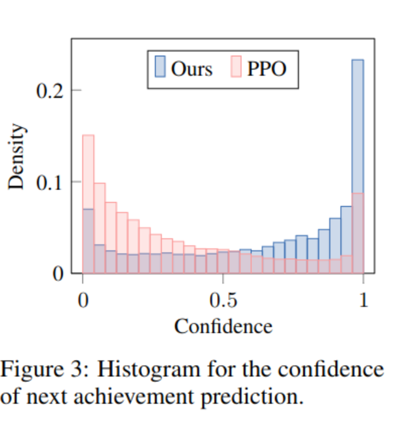
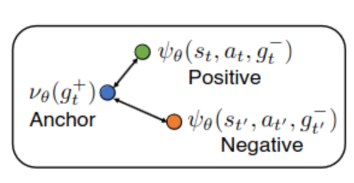

[TOC]
- Title: Discovering Hierarchical Achievements in Reinforcement Learning via Contrastive Learning
- Author: Seungyong Moon et. al.
- Publish Year: 2 Nov 2023
- Review Date: Tue, Apr 2, 2024
- url: https://arxiv.org/abs/2307.03486
Summary of paper

Contribution
- PPO agents demonstrate some ability to predict future achievements. Leveraging this observation, a novel contrastive learning method called achievement distillation is introduced, enhancing the agent’s predictive abilities. This approach excels at discovering hierarchical achievements,
Some key terms
Model based and explicit module in previous studies are not that good
- Many prior methods have been built upon model-based or hierarchical approaches, with the belief that an explicit module for long-term planning would be advantageous for learning hierarchical dependencies. However, these methods demand an excessive number of environment interactions or large model sizes, limiting their practicality.
requirements for modern agent
- To successfully deploy RL agents in real-world scenarios, which are constantly changing and open-ended, they should generalize well to new unseen situations and acquire reusable skills for solving increasingly complex tasks via long-term reasoning.
model-based methods
- they predicts future states and rewards for learning long-term dependencies by employing a latent-world model (e.g., . DreamerV3)
- these methods have shown effectiveness in discovering hierarchical achievements, particularly in procedurally generated environments
- however, they are constructed with large model size, and often require substantial exploratory data, which limits their practicality
hierarchical methods
- rely on prior knowledge, hard-code engineering
- they necessitate a significant number of offline expert data to reconstruct the graph
**Big picture of the methodology **
- the method periodically distills relevant information on achievements from episodes to the encoder via contrastive learning.
- maximize the similarity using optimal transport in the latent space between achievements from two different episodes, matching them using optimal transport, so that they will have the same semantic,
Problem Setting and Assumptions
- assumptions
- they assume that the agent has no prior knowledge of the achievement graph, including the number of achievements and their dependencies
- the agent has no direct access to information about which achievements have been unlocked.
- instead, the agent must infer this information indirectly from the reward signal it receives

bootstrapped value function
- the bootstrapped value function is a technique used to estimate the value function target $\hat{V}_t$.
- “bootstrapping” means self-guiding
- In statistics and RL, bootstrapping is a sampling method that uses individual observations to estimate the statistics of the population.
- Bootstrapping: When you estimate something based on another estimation.
Key observation
- relying solely on policy and value optimization to train the encoder can lead to suboptimal state representations, particularly in procedurally generated environments (i.e., cartoon images)
- PPO is good enough if we add size, add layer normalization and value normalization

analyzing learned latent representations of the encoder
- what they did
- train a linear classifier using the latent representation as input to predict the very next achievement unlocked in the episode containing the current state, i.e., predict the intention using the latent vector
- 
- this shows that PPO may struggle to generate optimal action sequence towards the current specific subgoal.
issue
- we cannot really label the achievement because we assume that the agent has no access to this kind of information, thus, an alternative way is to clearly distinguish different achievements
FiLM layer
- this is used to get the latent vector for the transition
$$ \mathrm{FiLM}\theta(\phi\theta(s_t), a_t) = (1 + \eta_\theta(a_t)) \phi_\theta(s_t) + \delta_\theta(a_t), $$
where $\eta_\theta$ and $\delta_\theta$ are two-layer MLPs, each with a hidden size of 1024
Contrastive learning for achievement distillation
- Intra-trajectory achievement prediction:
- Within an episode, this maximizes the similarity in the latent space between a state-action pair and its corresponding next achievement.
- rationale: this will group the sequence of achieving the next subgoal together
- Cross-trajectory achievement matching:
- Between episodes, this maximizes the similarity in the latent space for matched achievements.
- rationale: Since Crafter environments are procedurally generated, the achievement representations learned solely from intra-trajectory information may include environment-specific features that limit generalization


-
Entropic Regularization ($\alpha$ term):
- The term $\alpha \sum_{i=1}^m \sum_{j=1}^n T_{ij} \log T_{ij}$ introduces entropic regularization, which encourages the transport plan to be smoother and more spread out. This discourages the solution from being too “spiky” (i.e., putting all probability mass into a single match), which can happen in cases of high dissimilarity or ambiguity. Entropic regularization makes the optimization problem easier to solve computationally and encourages solutions that are more robust to small variations in the data.
-
Constraints:
- The constraints ensure that the transport plan is valid. $T \mathbf{1} \leq \mathbf{1}$ and $T^\top \mathbf{1} \leq \mathbf{1}$ ensure that no more mass is transported from an achievement than is available, and no more mass is received by an achievement than is possible. The equality constraint $\mathbf{1}^\top T^\top \mathbf{1} = \min { m, n }$ ensures that the total transported mass equals the minimum sequence length, acknowledging that not all achievements can or should be matched.
|
|
It seems that the entropic_partial_wasserstein fully represents the soft matching equation, thus we need to check what is entropic_partial_wasserstein
using memory
- we concatenate the latent state representation with the previous achievement representation and the resulting vector is then fed into the policy to predict next action
- this allows the agent to know what is the previous achievement
next achievement prediction through vector alignment

Algorithm


Results
For instance, our method collects iron with a probability over 3%, which is 20 times higher than DreamerV3. This achievement is extremely challenging due to its scarcity on the map and the need for wood and stone tools.
other results
- value based RL (DQN) model just cannot play well due to complex environment.
limitation
Limitation - Lack of Evaluation on Transferability: The text identifies a critical limitation in the work, highlighting that the transferability of the method to an unsupervised setting has not been evaluated. Specifically, it’s unclear how the approach would perform in scenarios where an agent operates without any predefined rewards. In traditional RL, rewards guide learning by providing feedback on the desirability of actions taken in different states. The concern here is whether the method would still be effective if an agent had to learn without such guidance.